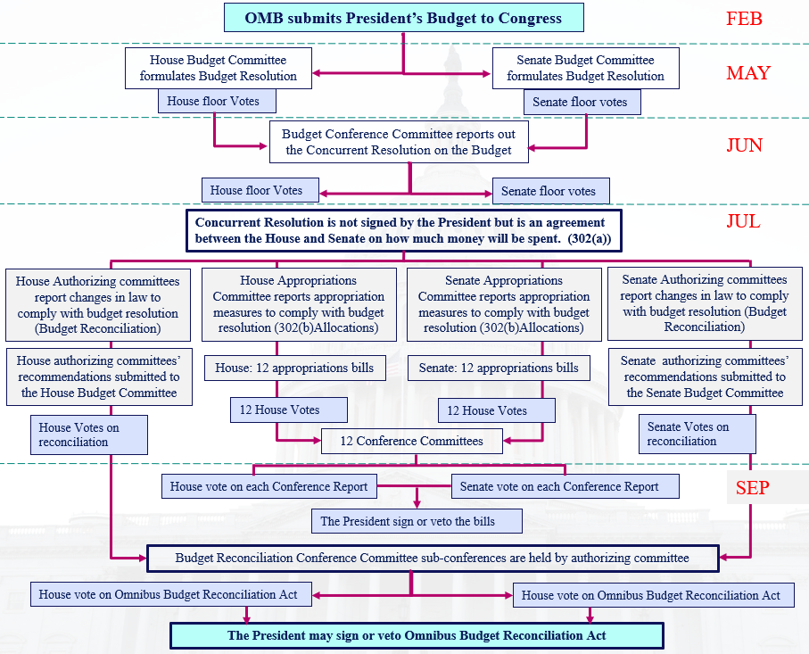

Congressional Enactment Process

Congressional budget actions may be classified according to three distinct types of measures involved:
- 1. Adoption of a budget resolution; the steps associated with this action commonly are referred to as the “congressional budget process”;
- 2. Passage of the annual appropriations bills, including regular, supplemental, and continuing appropriations measures;
- 3. passage of other legislation affecting the federal budget, such as authorizing legislation, reconciliation bills, and measures changing tax law, modifying entitlement programs, or adjusting the debt limit. The budget resolution is Congress’s main procedure for linking these different types of measures.
The Congress begins its work on its budget resolution shortly after it receives the President’s Budget. Under the procedures established by the Congressional Budget Act of 1974, the Congress decides on budget targets before commencing action on individual appropriations. The Act requires each standing committee of the House and Senate to recommend budget levels and report legislative plans concerning matters within the committee’s jurisdiction to the Budget Committee in each body. The House and Senate Budget Committees then each design and report, and each body then considers, a concurrent resolution on the budget. The congressional timetable calls for the House and Senate to resolve differences between their respective versions of the congressional budget resolution and adopt a single budget resolution by April 15 of each year. In the report on the budget resolution, the Budget Committees allocate the total on budget authority and outlays set forth in the resolution to the Appropriations Committees and the other committees that have jurisdiction over spending. These committee al locations are commonly known as “302(a)” allocations, in reference to the section of the Congressional Budget Act that provides for them. The Appropriations Committees are then required to divide their 302(a) allocations of bud get authority and outlays among their subcommittees. These subcommittee allocations are known as “302(b)” al locations. There are procedural hurdles associated with considering appropriations bills that would breach or further breach an Appropriations subcommittee’s 302(b) allocation. Similar procedural hurdles exist for considering legislation that would cause the 302(a) allocation for any committee to be breached or further breached. The Budget Committees’ reports may discuss assumptions about the level of funding for major programs. While these assumptions do not bind the other committees and subcommittees, they may influence their decisions.
Budget resolutions may include “reserve funds,” which permit adjustment of the resolution allocations as necessary to accommodate legislation addressing specific matters, such as healthcare or tax reform. Reserve funds are most often limited to legislation that is deficit neutral, including increases in some areas offset by decreases in others. The budget resolution may also contain “reconciliation directives”.
The budget submission includes the following volumes:
Since the concurrent resolution on the budget is not a law, it does not require the President’s approval. However, the Congress considers the President’s views in preparing budget resolutions, because legislation developed to meet congressional budget allocations does require the President’s approval. In some years, the President and the joint leadership of Congress have formally agreed on plans to reduce the deficit or balance the budget. These agreements were then reflected in the budget resolution and legislation passed for those years.
If the Congress does not pass a budget resolution, the House and Senate typically adopt one or more “deeming resolutions” in the form of a simple resolution or as a pro vision of a larger bill. A deeming resolution may serve nearly all functions of a budget resolution, except it may not trigger reconciliation procedures in the Senate.
Once the Congress approves the budget resolution, it turns its attention to enacting appropriations bills and authorizing legislation. The Appropriations Committee in each body has jurisdiction over annual appropriations. These committees are divided into subcommittees that hold hearings and review detailed budget justification materials prepared by the Executive Branch agencies within the subcommittee’s jurisdiction. After a bill has been drafted by a subcommittee, the full committee and the whole House, in turn, must approve the bill, sometimes with amendments to the original version. The House then forwards the bill to the Senate, where a similar review follows. If the Senate disagrees with the House on particular matters in the bill, which is often the case, the two bodies form a conference committee (consisting of some Members of each body) to resolve the differences. The conference committee revises the bill and returns it to both bodies for approval. When the revised bill is agreed to, first in the House and then in the Senate, the Congress sends it to the President for approval or veto.
The Congress also provides budget authority in laws other than appropriations acts. In fact, while annual appropriations acts fund the majority of Federal programs, they account for only about a third of the total spending in a typical year. Authorizing legislation controls the rest of the spending, which is commonly called “mandatory spending.” A distinctive feature of these authorizing laws is that they provide agencies with the authority or requirement to spend money without first requiring the Appropriations Committees to enact funding. This category of spending includes interest the Government pays on the public debt and the spending of several major programs, such as Social Security, Medicare, Medicaid, un employment insurance, and Federal employee retirement. Almost all taxes and most other receipts also result from authorizing laws. Article I, Section 7, of the Constitution provides that all bills for raising revenue shall originate in the House of Representatives. In the House, the Ways and Means Committee initiates tax bills; in the Senate, the Finance Committee has jurisdiction over tax laws.
The budget resolution often includes reconciliation directives, which require authorizing committees to recommend changes in laws that affect receipts or mandatory spending. They direct each designated committee to report amendments to the laws under the committee’s jurisdiction that would achieve changes in the levels of receipts or reductions in mandatory spending controlled by those laws. These directives specify the dollar amount of changes that each designated committee is expected to achieve, but do not specify which laws are to be changed or the changes to be made. However, the Budget Committees’ reports on the budget resolution frequently discuss assumptions about how the laws would be changed. Like other assumptions in the report, they do not bind the committees of jurisdiction but may influence their decisions. A reconciliation instruction may also specify the total amount by which the statutory limit on the public debt is to be changed.
The committees subject to reconciliation directives draft the implementing legislation. Such legislation may, for example, change the tax code, revise benefit formulas or eligibility requirements for benefit programs, or authorize Government agencies to charge fees to cover some of their costs. Reconciliation bills are typically omnibus legislation, combining the legislation submitted by each reconciled committee in a single act.
Such a large and complicated bill would be difficult to enact under normal legislative procedures because it usually involves changes to tax rates or to popular social programs, generally to reduce projected deficits. The Senate considers such omnibus reconciliation acts under expedited procedures that limit total debate on the bill. To offset the procedural advantage gained by expedited procedures, the Senate places significant restrictions on the substantive content of the reconciliation measure itself, as well as on amendments to the measure. Any material in the bill that is extraneous or that contains changes to the Federal Old Age and Survivors Insurance and the Federal Disability Insurance programs is not in order under the Senate’s expedited reconciliation procedures. Nongermane amendments are also prohibited. The House does not allow reconciliation bills to increase mandatory spending in net, but does allow such bills to increase deficits by reducing revenues. Reconciliation acts, together with appropriations acts for the year, are usually used to implement broad agreements between the President and the Congress on those occasions where the two branches have negotiated a comprehensive budget plan. Reconciliation acts have sometimes included other matters, such as laws providing the means for enforcing these agreements.
Since 1977, when the start of the fiscal year was established as October 1, there have been only three fiscal years (1989, 1995, and 1997) for which the Congress agreed to and enacted every regular appropriations bill by that date. When one or more appropriations bills has not been agreed to by this date, the Congress usually enacts a joint resolution called a “continuing resolution’’ (CR), which is an interim or stopgap appropriations bill that provides authority for the affected agencies to continue operations at some specified level until a specific date or until the regular appropriations are enacted. Occasionally, a CR has funded a portion or all of the Government for the entire year.
The Congress must present these CRs to the President for approval or veto. In some cases, Congresses have failed to pass a CR or Presidents have rejected CRs because they contained unacceptable provisions. Left without funds, Government agencies were required by law to shut down operations—with exceptions for some limited activities—until the Congress passed a CR the President would approve. Shutdowns have lasted for periods of a day to several weeks.
